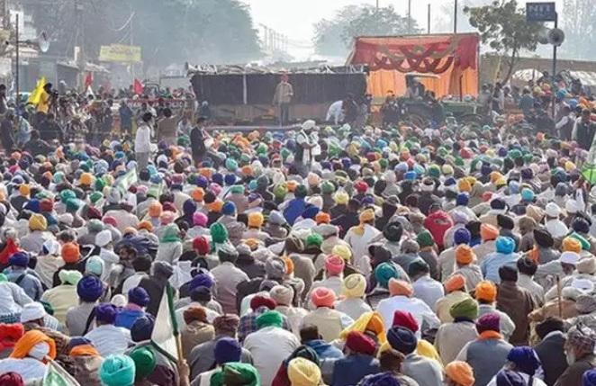

<html>
    <title>Details of Ghazipur- </title>
    <style>
        p{
            font-family: Bell MT;
        }
    </style>
    <style>
        h1{
            font-family: Algerian;
        }
    </style>
    <style>
        img{
            float:right;
        }
    </style>
    <bg colour="cornsilk">
        <center><u><h1 style="font-size:60px;"> <p style="background-color:darkseagreen;" size="50px">Details of Ghazipur-</p></h1></u></center>
        <hr size="7" color="dark blue">
        <ol>
            <h1 style="background-color: sandybrown; font-size:40px";>   <li>More About People-</li>
           </h1>
             <p><h2>[God and Goddess also sing always that those people who are born in India, Which leads to the Heaven and liberation are more fortunate than Them.]

            As the name the land of Bravery , Physically the residents of Ghazipur are Tall and Healthy and many serving nation in defence since its past. The person belong to eastern part of district They are comparatively Tall, healthy & Fair complexioned.and other from western part they are bit shorter than the previous one. Due to rich agriculture and cuisine, the resident are brave and healthy. In the evening “Chaupal” is a main part of daily routine of rural life, where the problem of people are solved by elderly people.
            <ol>
            <b><li>Dress-</b>
            The influence of dress worn in urban areas has brought about some change in the sartorial style of people living in the villages. Traditional costumes are gradually disappearing yielding place to modern garments sometimes made of , synthetic fabrics. Formals dress includes the Sherwani and trousers and Kurta and Dhoti.In the villages are still seen older man with the turban ( Pugree or Safa ) Ghandhi cap is also very popular. Ladies wear Sari.
            
            <b><li>Ornaments- </b>
            Men in the district sometimes wear a gold or silver ring on their finger and the chain around the neck.Women generally wear Churis ( Bangles) made of Glass ,Silver or gold, Finger rings, Necklaces and chains , nose rings or nose studs, ear ring, payal, ( Anklets), Bhichua ( Toe rings- means only for married women), waist girdles .
            
           <b><li> Food-</b>
            Wheat constitutes the staple food of the people,the other grains commonly consumed here being Rice,Jwar, Gram, Bajra. The Chapaaties or Roti made of wheat or corn flour are generally eaten with pulses which here are Ahrah,urd,moong,chana and masur. during the winter the Baati and chokha is a common meal during the night. Gur and sugar are the cheif sweetening agents.
           </li></ol>
              </h2></p>
              
            
            <h1 style="background-color: sandybrown; font-size:40px";><li>municipalities-</h1>

            </li>
            <ul >
                <h2><a href="https://heyplaces.in/02294537/Nagar_Palika_Parishad_Mohammadabad)"><li>Nagar palika,Ghazipur
                    <a href="http://nppzamania.in/statistics.aspx"> <li>Nagar Palika Parishad, Mohammadabad</li></a>
                    <a href="http://nppghazipur.in/statistics.aspx"><li>Nagar Palika Parishad,Zamania</li></a>
                    <a href="http://nppghazipur.in/statistics.aspx"><li>Nagar Panchayat,Bahadurganj</li></a>
                    <a href="https://www.census2011.co.in/data/town/801225-dildarnagar-fatehpur-bazar-uttar-pradesh.html"> <li>Nagar Panchayat,Dildarnagar</li></a>
                    <a href="https://www.census2011.co.in/data/town/801221-jangipur-uttar-pradesh.html"><li>Nagar Panchayat,Jangipur</li></a>
                    <a href="https://www.census2011.co.in/data/town/801219-sadat-uttar-pradesh.html"><li>Nagar Panchayat,Sadat</li></a>
                    <a href="https://www.npsaidpur.in/"><li>Nagar Panchayat,Saidpur</li></a>
                </h2>
                </li>
            </ul>
            <style>
                ul{
                 border:3px ridge rgb(95, 196, 196);
                 width:400px;
                margin:50px;
                background-color: #d6ffad;
                }
                
                </style>
                
                
            <marquee bgcolor="yellow" size="5"><h2><b>To know more about Municipalities<a href="https://ghazipur.nic.in/?csrf_nonce=ff73e185fd&_wp_http_referer=%2Fflora-fauna%2F&s=Municipalities"> Cick here-</a>
            To know more about people <a href="https://ghazipur.nic.in/?s=more+abou+people">Click here-</a></b></h2></marquee>
                </html>